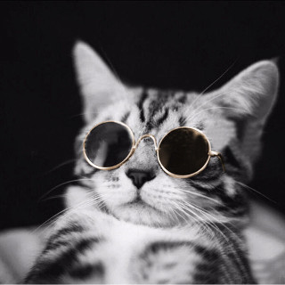
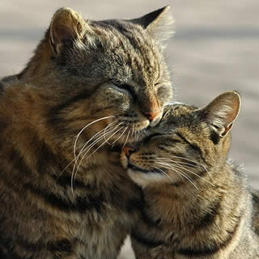

About Us
Didirikan pada pertengahan tahun 2019, KUA (Kucing Untuk Anda) adalah layanan jejaring sosial yang bertujuan untuk membantu pecinta kucing menemukan pasangan untuk kucing peliharaannya. Untuk dapat mendapatkan hasil pasangan, pengguna harus memasukkan informasi tentang kucing peliharaannya mulai dari jenis, warna, gender, foto(belum diimplementasikan), dan informasi kucing pasangan yang diinginkan.


VISI
Untuk menjadi organisasi kesejahteraan hewan khususnya kucing yang unggul dalam mancarikan pasangan hidup dan meningkatkan kesejahteraan pemilik kucing tersebut.
MISI
- Memperluas hubungan antar pecinta hewan
- Menumbuhkan rasa saling menghormati dan menghargai antar pecinta hewan
- Mengadakan kegiatan meetup bagi pecinta kucing secara berkala